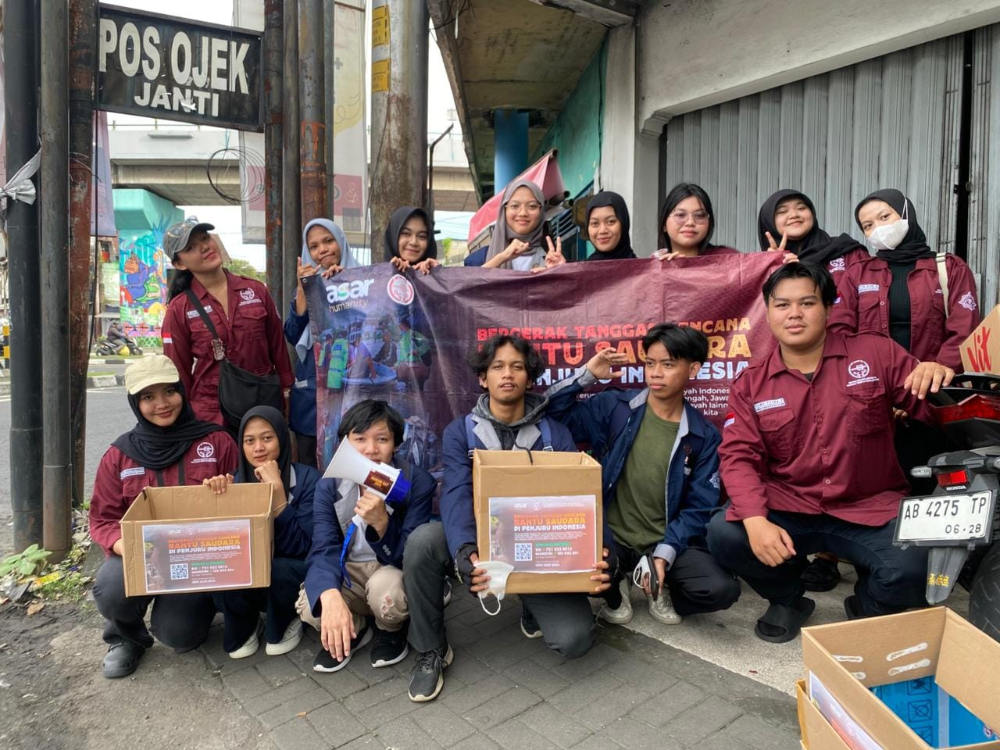
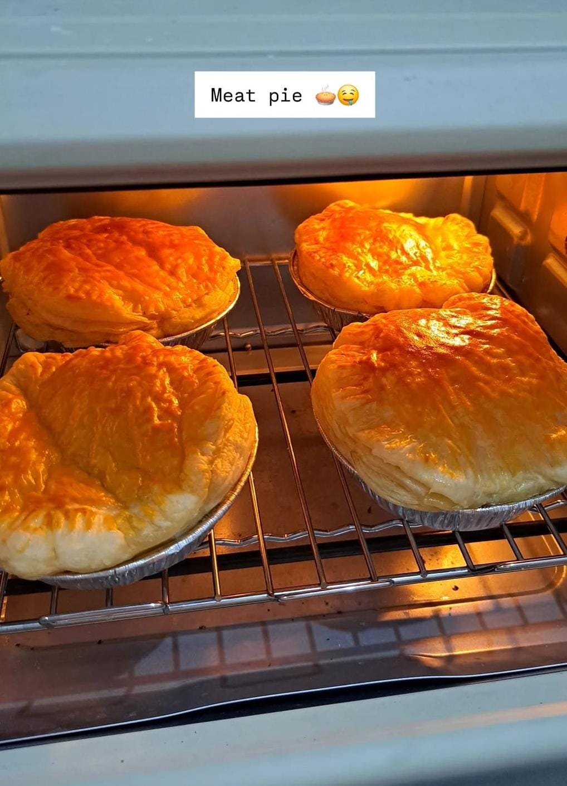
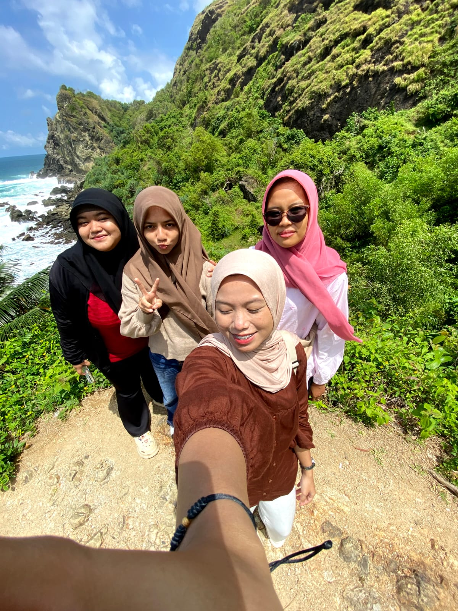

Kegiatan Perkuliahan
Sebagai mahasiswa semester 5 Program Studi Teknik Informatika, saya menjalani kegiatan perkuliahan, mengerjakan tugas praktikum, mempelajari HTML dan CSS, serta mengembangkan keterampilan di bidang teknologi informasi. Saya berusaha terus belajar agar dapat menambah pengetahuan dan pengalaman.
Pengalaman Organisasi

Saya tertarik mengikuti kegiatan organisasi karena dapat menambah pengalaman, melatih kerja sama tim, meningkatkan kemampuan komunikasi, dan belajar bertanggung jawab. Melalui kegiatan organisasi, saya juga bisa bertemu orang-orang baru dan belajar banyak hal.
Hobi

Salah satu hobi saya adalah memasak. Saya senang mencoba berbagai resep, mengenal bahan makanan, dan membuat hidangan baru. Bagi saya, memasak merupakan kegiatan yang menyenangkan serta dapat melatih kreativitas, ketelitian, dan kesabaran.
Bermain dan Jalan-Jalan

Di waktu luang, saya senang bermain dan menghabiskan waktu bersama teman-teman. Saya juga suka jalan-jalan untuk mencari suasana baru dan mengunjungi tempat-tempat menarik. Kegiatan ini menjadi cara saya untuk bersantai, menyegarkan pikiran, dan menciptakan kenangan yang menyenangkan.